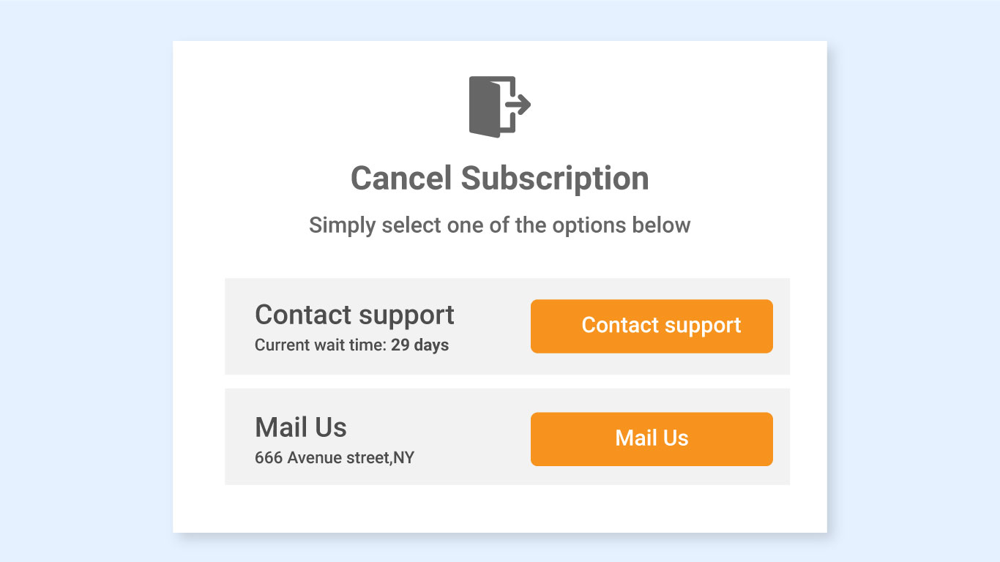
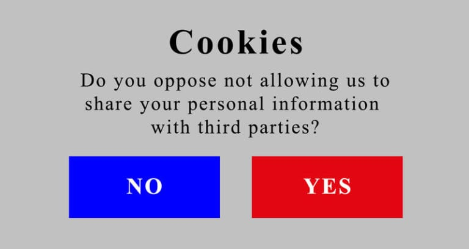
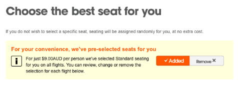
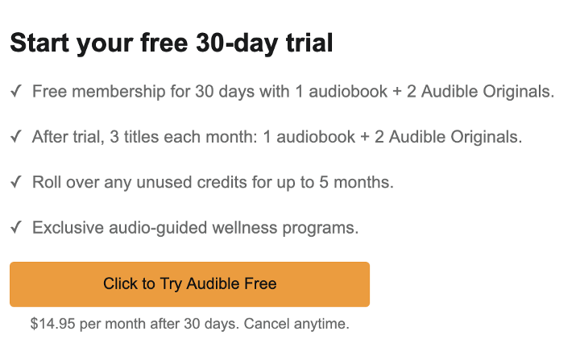
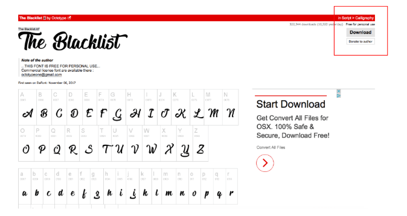

Examples
Here are some common examples of dark patterns in UX design, courtesy of the UX Design Institute:
https://www.uxdesigninstitute.com/blog/what-are-dark-patterns-in-ux/#the-12-types-of-dark-patterns| Dark Pattern | Description | Example |
|---|---|---|
| Roach Motel | Making it easy to sign up for a service or subscription but confusing or difficult to cancel. |  |
| Trick Questions | Using subtle language and tricks to manipulate users into making unintended choices. |  |
| Misdirection | Distracting users from the actual information or options available to them, such as by pre-selecting options and saying it's "for your convenience". |  |
| Forced Continuity | Free trials that automatically renew and charge the user. |  |
| Disguised Ads | When ads that are often malicious are disguised as legitimate UX elements such as a download button. |  |